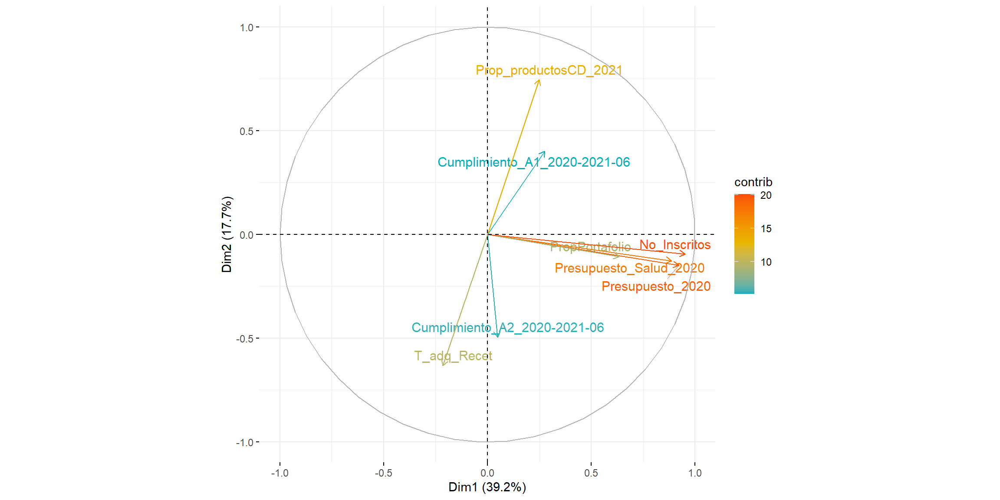

4.5 Clasificación de los FRE por nivel de complejidad
Durante el desarrollo de las visitas técnicas a los territorios, se observaron importantes diferencias entre los FRE departamentales. Estas diferencias se podrían explicar por factores administrativos, organizativos y socio-demográficos que se presentan en cada departamento. Debido a esto puede que los FRE tengan un desarrollo de sus actividades en determinada forma, lo cual resulta en un grado de eficiencia definido para cada ente territorial, en cuanto al manejo de MME, recetarios, o informes en la región.
Por lo tanto, se propone una clasificación de los FRE - de acuerdo a su nivel de complejidad e indicadores de eficiencia - con el fin de mejorar el direccionamiento de acciones o asistencia a los FREs, sin el ánimo de generar acciones prohibitivas o represivas. El objetivo es generar grupos de FRE que permitan establecer las capacidades actuales así como las similaridades o diferencias entre los departamentos. Todo esto con el fin de generar un instrumento que sirva como insumo para la generación de políticas públicas y toma de decisiones relacionadas con el manejo de MME.
4.5.1 Variables
A continuación, se presenta una descripción de las variables definidas para la clasificación de los FRE:
4.5.1.1 Variables relacionadas con la complejidad
Regionalización del Presupuesto General de la Nación de 20208.
Regionalización del Presupuesto General de la Nación de 2020 y su asignación al sector salud8.
Número de inscritos (instituciones) en el departamento que realizaron compras de MME al FRE, esta información se obtuvo mediante la encuesta aplicada.
Proporción de portafolio de MME adquirido de forma continua por parte del FRE, esta información se obtuvo a partir de datos de ventas del FNE a los FRE. Esta variable se refiere al número de productos adquiridos por el FRE de manera continua sobre el número de productos totales en el portafolio.
4.5.1.2 Indicadores de eficiencia
- Proporción de ventas realizadas por el FRE a instituciones en el departamento del FNE frente a la suma de ventas de FRE y compras directas
\[P~\left(v_{\mathrm{FRE}}\right) = \frac{v_{\mathrm{FRE}} }{v_{\mathrm{FRE}} + v_{\mathrm{CD}}}\]
En donde, \(P~\left(v_{\mathrm{FRE}}\right)\) es la proporción de ventas realizadas a través del canal FRE (se entiende a las compras directas como una desviación de la cadena de suministro), \(v_{\mathrm{FRE}}\) y \(v_{\mathrm{CD}}\) son las ventas hechas por el FNE directamente a los FRE o instituciones por compra directa en el año 2021 de manera respectiva, las ventas se ingresan cómo ventas en unidades monetarias. Un valor alto en esta proporción indicaría que los FRE pueden suplir la demanda por parte de los inscritos en el departamento.
- Proporción de meses con entrega del Anexo 1 de la Resolución 1479 de 2006 (cumplimiento).
\[P~\left( \mathrm{Cumpl.~A1}\right) = \frac{\sum^{N_m}_{m = 1}{1_{\mathrm{Cumpl.~A1}}}}{N_m}\]
En donde, \(1_{\mathrm{Cumpl.~A1}}\) indica que se debe sumar 1 en los meses en los que se reporte un cumplimiento en la entrega del Anexo 1, \(N_m\) es el número de meses en el período a considerar, y \(m\) indica los meses. Esta información fue provista por el grupo de regionalización del FNE y el cumplimiento fue determinado para el período comprendido entre enero de 2020 y junio de 2021 (\(N_m = 18\)).
- Proporción de meses con entrega del Anexo 2 de la Resolución 1479 de 2006 (cumplimiento). \[P~\left( \mathrm{Cumpl.~A2}\right) = \frac{\sum^{N_m}_{m = 1}{1_{\mathrm{Cumpl.~A2}}}}{N_m}\]
En donde, \(1_{\mathrm{Cumpl.~A2}}\) indica que se debe sumar 1 en los meses en los que se reporte un cumplimiento en la entrega del Anexo 2, \(N_m\) es el número de meses en el período a considerar, y \(m\) indica los meses. Esta información fue provista por el grupo de regionalización del FNE y el cumplimiento fue determinado para el período comprendido entre enero de 2020 y junio de 2021 (\(N_m = 18\)).
- Razón entre tiempo de adquisición de recetarios sobre existencias estimadas de recetarios en circulación en el departamento.
\[R \left(\mathrm{T_{adq}}/\mathrm{N_{recetarios}}\right ) = \left\{\begin{matrix} \frac{\mathrm{T_{adq}}}{\mathrm{N_{recetarios}}}\quad\mathrm{Si}~\mathrm{N_{recetarios}}>0 \\ 100\quad\quad\quad\mathrm{Si}~\mathrm{N_{recetarios}}=0 \end{matrix}\right. \]
En donde, \(\mathrm{T_{adq}}\) es el tiempo que toma la adquisición de recetarios en días, y \(\mathrm{N_{recetarios}}\) es el número de recetarios que se tienen en circulación en el departamento de acuerdo a lo reportado por los FRE. A diferencia del resto de indicadores un valor bajo de esta razón indica que el proceso toma menos tiempo.
4.5.2 Análisis mediante clusterización
Es importante resaltar que la complejidad concluida estaría relacionada con la capacidad que tiene el FRE de cumplir con sus funciones y responsabilidades, considerando factores económicos propios del departamento. Un ejemplo ilustrativo corresponde al FRE Córdoba, donde el ente territorial es clasificado en la categoría “FRE altamente consolidado”. A pesar de esta clasificación, el rubro económico destinado para temas de salud en este departamento es relativamente bajo, sin embargo, el personal del FRE procura realizar una buena gestión estos recursos para el adecuado manejo de MME y recetarios oficiales.
En primer lugar, la variable de presupuesto y número de inscritos, refleja la asignación de recurso económico en cada región para la partida presupuestal de los temas en salud de cada territorio. Esto entendiéndose como un condicionante de la capacidad que tienen los FRE para disponer de infraestructura tecnológica y recurso humano suficiente, para cumplir todas sus funciones como ente territorial. Adicionalmente, el número de inscritos en cada territorio muestra la complejidad de la oferta y demanda en cada región, la cual debe satisfacer la gestión del FRE.
La variable referente a la proporción de adquisición de MME, indica la proporción de medicamentos ofertados por el FRE en su territorio, de acuerdo con el portafolio general de MME presentado por el FNE. A partir de esto, se determina de manera indirecta, la capacidad de manejo de portafolio que tiene un FRE. Esta capacidad de manejo está relacionada con las condiciones de almacenamiento, infraestructura física y recurso humano disponible en el ente territorial.
Otra variable importante en este análisis es la variable referente a cantidad de compras directas al FNE. Esta información refleja el número de compras que realizaron las instituciones inscritas en cada territorio con el FNE, debido al desabastecimiento de MME en su respectivo departamento. Esto podría ser causa de una proyección de compra de MME inapropiada, por parte del FRE, cuyo proceso está directamente relacionado con los anexos técnicos de distribución y consumo que son presentados mensualmente.
Finalmente, las variables relacionadas con el cumplimiento de entrega del Anexo 1 y Anexo 2 de la Resolución 1479 de 20062, fueron incluidas en esta clasificación, ya que inciden en gran proporción en la proyección de adquisición de MME para satisfacer las necesidades del territorio. La consolidación de la información dispuesta en estos anexos se relaciona directamente con la cantidad de personas vinculadas al FRE, cuyo factor muestra la capacidad de recurso humano en cada FRE.
Para ilustrar el comportamiento de los FRE respecto a las variables seleccionadas se realizó un análisis de componentes principales (PCA, Principal Component Analysis). La Figura 4.11 muestra el comportamiento de las 5 variables definidas para este análisis respecto a los componentes principales. En primer lugar, se puede determinar que las variables más próximas en el plano del componente 1 (PC1), presentan la mayor variabilidad entre los FRE, seguido por aquellas ubicadas cerca del plano del componente 2 (PC2). Las variables de monto presupuestal (general y salud), así como número de inscritos y en cierta medida la proporción del portafolio tienen un alta correlación entre sí por lo cual presentan una proyección cercana entre sí.
Figura 4.11: Variables involucradas en la construcción de los componentes principales
Por el contrario, las variables más dispersas en el plano presentado en la Figura 4.11, no guardan relación entre sí, por lo tanto, estas variables tienen información importante para realizar la clasificación de los FRE. En este orden de ideas, la variable referente a la consolidación del anexo 2 en los FRE no mantiene una relación directa con el número de compras directas que haya hecho el departamento o con la variable del portafolio que ofrecen los FRE. Se realizó un análisis de agrupación (cluster) jerárquico mediante el algoritmo de Ward en el software R. Se seleccionaron 5 grupos de acuerdo al análisis mediante un criterio de codo. A partir de la descripción anterior, la clasificación según la complejidad de los FRE, resultó como aparece en la Figura 4.12.
Figura 4.12: Clasificación de los FRE en grupos de acuerdo a análisis por clúster
Luego de un análisis multivariado en el lenguaje de programación R, se definieron varios parámetros a tomar en cuenta para esta clasificación. Según los datos obtenidos por las 5 variables en cada departamento, se lograron agrupar los FRE en 3 categorías, las cuales serán descritas a continuación:
FRE suficientemente consolidado (Verde)
FRE medianamente consolidado (Azul)
FRE en proceso de consolidación (Rojo)
Es preciso resaltar que los FRE Antioquia y Valle del Cauca fueron categorizados como dos categorías distintas, respectivamente. Lo anterior es suscitado por las grandes diferencias en la gestión de MME y la administración departamental, que tienen estos entes territoriales frente a los otros FRE. No obstante, el análisis descriptivo de la Figura 4.12, permite organizar estas agrupaciones en 3 categorías, dejando fuera a estos dos FRE, cuyas capacidades exceden la media de la gestión de los FRE a nivel nacional.
La categoría “FRE suficientemente consolidado” exhibida en color verde en la Figura 4.12, habla de un FRE que tiene capacidades operativas y administrativas suficientes, teniendo en cuenta factores externos como el presupuesto y la complejidad de las instituciones inscritas en su territorio. Sin embargo, existen variables donde se requiere adelantar un trabajo profundo para llegar a tener una gestión ideal como el caso de Antioquia y Valle del cauca, recalcando que también son territorios de alta complejidad. Es necesario aclarar que esta denominación “altamente consolidado” está relacionada directamente con las capacidades del departamento, para gestionar sus recursos en salud.
La categoría “FRE medianamente consolidado” se muestra de color azul en la Figura 4.12 Esta clasificación representa a los FRE que cumplen con las necesidades de manejo de MME en su territorio, no obstante, estos entes territoriales tienen suficiente presupuesto para adelantar una gestión aún mejor y más robusta. Por este motivo se recomienda a los FRE de este grupo, mejorar en los siguientes temas puntuales como: (i) contratación del personal del FRE, (ii) cumplimiento de los anexos de la Resolución 1479 de 2006 y (iii) proyección adecuada del consumo de MME en cada territorio.
La categoría “FRE en proceso de consolidación” exhibida en color rojo en la Figura 4.12, contiene a los FRE que necesitan asistencia técnica inmediata por parte del FNE, de la mano de su respectiva Dirección Departamental de salud. Lo anterior se debe a que estos FRE no presentan una complejidad muy alta en función de las pocas instituciones inscritas, densidad demográfica y el limitado portafolio de MME que se distribuyen en estos territorios. En adición, el seguimiento y manejo de los MME es débil en estos FRE y sus herramientas tecnológicas son limitadas. Por esta razón, la asistencia técnica por parte del FNE puede ser de gran ayuda, para entender cómo distribuir los recursos a disposición del FRE y mejorar en capacidades propias, con el fin de apoyar en el proceso de consolidación del FRE.s